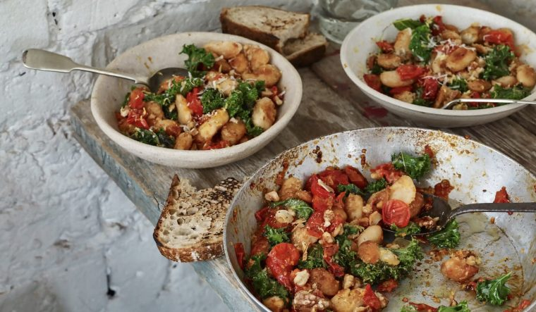

Home
Crispy Butter Beans

Description
An Anna Jone's classic recipe. Tasty crispy butter beans with kale and tomatoes. Simple and delicious.
Ingredients
- 2 tins of 400g Butter beans
- 400g cherry tomatoes
- 200g Kale, washed, stems removed, torn
- 2 Garlic gloves
- Salt
- Olive oil
- Crusty bread
Steps
- Heat the olive oil in a large frying pan over a high heat. Adds the butter beans in a single layer. Stir to coat the beans in oil and let them sit to brown and crisp on one side. Then turn and do the same on the other side. The beans should be golden and crunchy on the outside.
- Add the tomatoes and allow them to cook for a few minutes
- Add more oil to the pan and then add the kale with a pinch of salt. Cook for a couple of minutes turning all the time until it is tender and the edges have crisped.
- Add the garlic and cook for final few minutes. Remove from heat and serve with crispy bread.